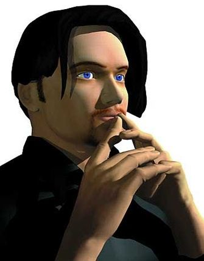

Virtual Idols
culture games music

Lara is the original "cyber babe". Initially the main character in the Tomb Raider series of computer games, she has since gone on to star on a range of merchandise, comics, soft drink advertisements and even a film that is currently in production with Angelina Jolie as Lara.
Lara's virtual assets have helped her games to top the retail charts whenever they are released, and in each game she has sported a new outfit and hairstyle. The most recent game to feature Lara Croft is Tomb Raider: The Last Revelation. Anyone concerned that the title suggests that this may be her last adventure need not worry. As Eidos, the makers of the game, proclaim:'You just can't keep a good girl down.'
The brainchild of Tessa and Sascha Hartman of Glasgow Records, T-Babe was created because Sascha wanted somebody to perform his dance tunes. Tessa suggested they should create a dancer and T-Babe was 'born'. T-Babe has her own web site, sponsored by computer graphics company SGI, where her biography says: 'She sings, she dances, she is quite simply unique.'

The creators of T-Babe envision a future where she will grow with her target audience. These changes will be released slowly so that she does not become boring. A profile of T-Babe says that she is 18, single and the daughter of a computer specialist and a "hippy chick"! To make sure she will appeal to the widest audience possible, T-Babe can speak English, Italian and German, and is learning Spanish and Japanese. The first T-Babe single, 'Peter Pumpkineater' is due for release later this year.

A rival for T-Babe has been created by ID Media in Germany. His creation was based on computerised sketches of a skeleton, to which muscle, flesh and features were added. The name E-Cyas was chosen, an acronym for 'Electronic Cybernetic Artificial Superstar'.
Although his official age is three years old, E-Cyas has been designed to look like the creators' idea of a perfect 20 year old man, based on the opinion and talents of some young students. E-Cyas is an avatar, a digital being who can be used in a variety of applications, from Internet searching software to games. He has already given interviews in magazines and on the Internet radio station ZDF Netnite. The message he has given to his fans is: "Whenever my fans need me, I am there for them. Everyone can get hold of me in cyberspace." E-Cyas has also released a single, 'Are You Real?' in Germany and the UK.
Officially the world's first virtual newscaster, Ananova was created by PA News Media to read the news on an Internet site. Her facial expressions are programmed to change depending on the tone of the news that is being delivered.
The creators of Ananova based her looks on the singer Kylie Minogue, "Posh Spice" Victoria Beckham and UK television presenter Carol Vordeman. Ananova has green hair and green eyes. She has also been given a change of clothes after PA were sent e-mail requests.
Virtual superstardom is as competitive as real life. Ananova already has a rival, Vandrea, a newsreader created by UK-based Channel 5 News. It seems that it's tough at the top of the unreal world too.